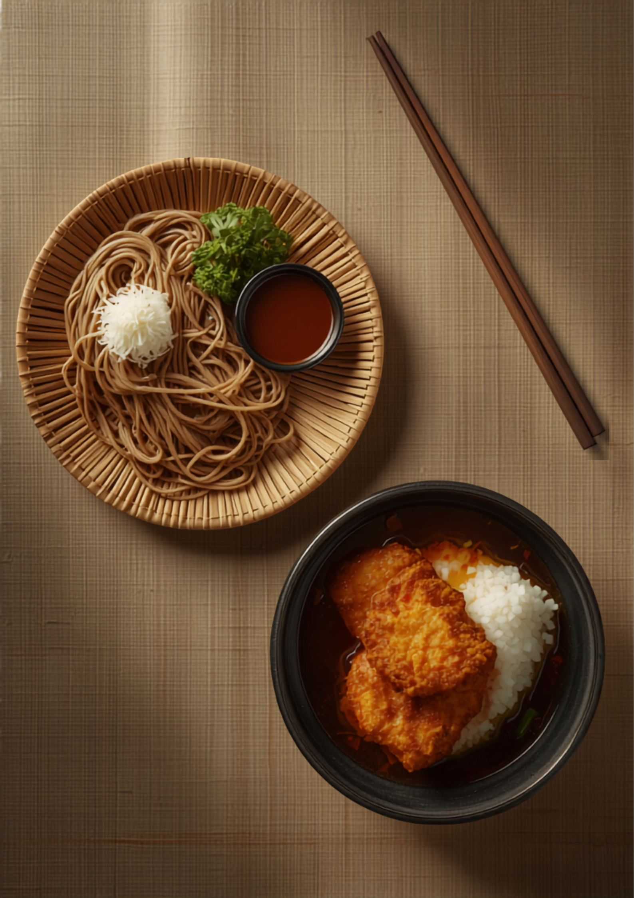
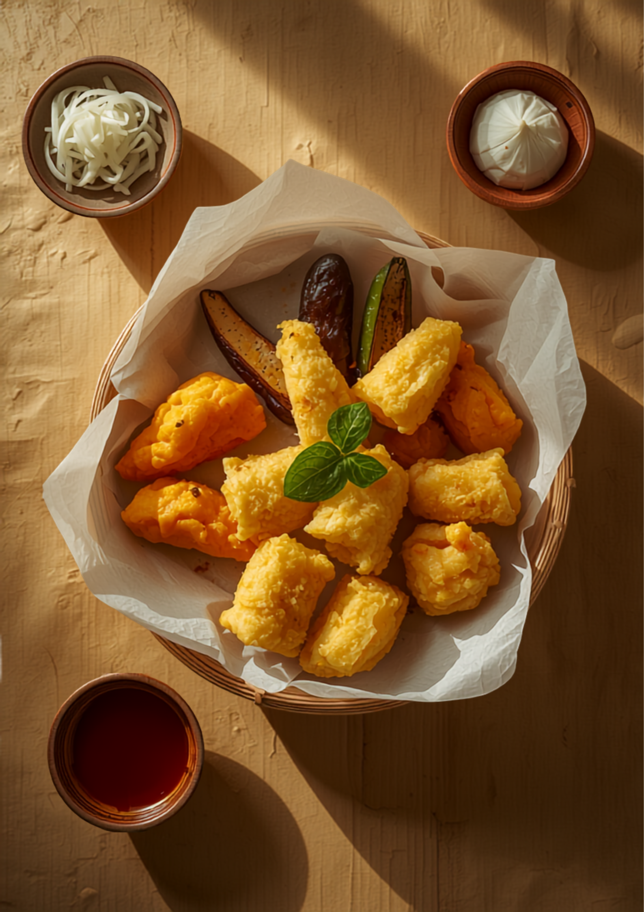

<meta charset="UTF-8" />
<meta name="viewport" content="width=device-width, initial-scale=1.0" />
<title>そば処 いとう｜蕎麦屋なのに、カツ丼に感動。｜福岡市城南区片江の老舗そば処</title>
<meta name="description" content="福岡市城南区片江の老舗そば処いとう。自家製の太打ち蕎麦、甘めで優しいThe九州の出汁、野菜たっぷりの天ぷら。名物カツ丼は『今まで食べた中で一番』と評判。蕎麦・うどん600円前後、セット900円前後。PayPay可。" />
<meta property="og:type" content="website" />
<meta property="og:title" content="そば処 いとう｜蕎麦屋なのに、カツ丼に感動。" />
<meta property="og:description" content="福岡市城南区片江の老舗そば処。太打ち蕎麦・甘めの出汁・野菜天ぷら、そして名物カツ丼。昔ながらの懐かしい造りで暖かい雰囲気。" />
<meta property="og:image" content="https://jinshanxia74-star.github.io/sample-sites/soba-ito-hero.png" />
<link rel="canonical" href="https://jinshanxia74-star.github.io/sample-sites/soba-ito.html">
<meta property="og:url" content="https://jinshanxia74-star.github.io/sample-sites/soba-ito.html">
<meta property="og:locale" content="ja_JP">
<meta name="twitter:card" content="summary_large_image">
<meta name="theme-color" content="#34502E" />

<script type="application/ld+json">
{
  "@context": "https://schema.org",
  "@type": "Restaurant",
  "name": "そば処 いとう",
  "servesCuisine": [
    "そば",
    "うどん",
    "丼物",
    "天ぷら"
  ],
  "image": "https://jinshanxia74-star.github.io/sample-sites/soba-ito-hero.png",
  "priceRange": "￥600〜￥1000",
  "telephone": "+81-92-864-7275",
  "paymentAccepted": "現金, PayPay",
  "address": {
    "@type": "PostalAddress",
    "addressRegion": "福岡県",
    "addressLocality": "福岡市城南区",
    "streetAddress": "片江",
    "addressCountry": "JP"
  },
  "url": "https://jinshanxia74-star.github.io/sample-sites/soba-ito.html"
}
</script>

<style>
  @import url('https://fonts.googleapis.com/css2?family=Sawarabi+Mincho&family=Noto+Serif+JP:wght@400;500;600&family=Zilla+Slab:wght@400;500;600&display=swap');

  :root {
    --bg: #F7F4EC;
    --surface: #EFE8D8;
    --primary: #34502E;
    --accent: #B4452F;
    --text: #2B2822;
    --muted: #857E6D;
    --line: #D8CDB6;
    --stitch: #8A7C5E;
    --serif: 'Noto Serif JP', serif;
    --brush: 'Sawarabi Mincho', serif;
    --num: 'Zilla Slab', serif;
  }

  * { margin: 0; padding: 0; box-sizing: border-box; }
  html, body { overflow-x: hidden; }

  html { scroll-behavior: smooth; }
  body {
    font-family: var(--serif);
    color: var(--text);
    background: var(--bg);
    line-height: 1.9;
    font-size: 16px;
    -webkit-font-smoothing: antialiased;
  }

  /* 和紙の地紋 */
  body::before {
    content: "";
    position: fixed;
    inset: 0;
    z-index: -2;
    background:
      radial-gradient(circle at 20% 30%, rgba(180,69,47,0.03), transparent 40%),
      radial-gradient(circle at 80% 70%, rgba(52,80,46,0.04), transparent 45%),
      var(--bg);
  }

  .brush { font-family: var(--brush); font-weight: 400; letter-spacing: 0.05em; }
  .num { font-family: var(--num); }

  /* ---- 綴じ帳面の1ページ ---- */
  .leaf {
    max-width: 1080px;
    margin: 0 auto;
    padding: clamp(2.5rem, 6vw, 5rem) clamp(1.5rem, 5vw, 4.5rem);
    position: relative;
  }
  .page {
    position: relative;
    background: var(--surface);
    border: 1px solid var(--line);
    border-radius: 2px;
    padding: clamp(2rem, 5vw, 4rem) clamp(1.5rem, 5vw, 4rem) clamp(2rem, 5vw, 4rem) clamp(2.4rem, 6vw, 5rem);
    box-shadow: 0 1px 0 rgba(255,255,255,0.6) inset, 0 18px 40px -30px rgba(43,40,34,0.5);
  }
  /* 左端の綴じ糸 */
  .page::before {
    content: "";
    position: absolute;
    top: 0; bottom: 0;
    left: clamp(1rem, 3vw, 2rem);
    width: 2px;
    background:
      repeating-linear-gradient(
        to bottom,
        var(--stitch) 0 14px,
        transparent 14px 26px
      );
    opacity: 0.7;
  }

  /* 頁番号ラベル */
  .folio {
    display: inline-flex;
    align-items: baseline;
    gap: 0.5rem;
    color: var(--accent);
    margin-bottom: 1.4rem;
    font-family: var(--brush);
  }
  .folio .kanji { font-size: 1.05rem; letter-spacing: 0.3em; }
  .folio .rule { flex: 1; height: 1px; background: var(--line); min-width: 40px; align-self: center; }

  h2.leaf-title {
    font-family: var(--brush);
    font-size: clamp(1.7rem, 4.5vw, 2.6rem);
    color: var(--primary);
    line-height: 1.5;
    letter-spacing: 0.04em;
    margin-bottom: 1.2rem;
  }
  h2.leaf-title .accent { color: var(--accent); }

  p { margin-bottom: 1.1rem; }
  p.lead { font-size: clamp(1rem, 2.4vw, 1.18rem); color: #40392E; }
  .muted { color: var(--muted); }

  /* ================= 表紙 ================= */
  .cover {
    position: relative;
    min-height: 92vh;
    display: grid;
    grid-template-columns: 1fr;
    align-items: stretch;
  }
  .cover-inner {
    max-width: 1200px;
    margin: 0 auto;
    width: 100%;
    display: grid;
    grid-template-columns: 1.05fr 1fr;
    gap: clamp(1.5rem, 4vw, 3.5rem);
    align-items: center;
    padding: clamp(2rem, 6vw, 4rem) clamp(1.5rem, 5vw, 4rem);
  }
  .cover-text { position: relative; }
  .seal {
    display: inline-block;
    font-family: var(--brush);
    color: #fff;
    background: var(--accent);
    padding: 0.35rem 0.9rem;
    border-radius: 2px;
    font-size: 0.82rem;
    letter-spacing: 0.28em;
    margin-bottom: 1.6rem;
  }
  .shopname {
    font-family: var(--brush);
    font-size: clamp(2.8rem, 9vw, 5rem);
    line-height: 1.12;
    color: var(--primary);
    letter-spacing: 0.06em;
    margin-bottom: 0.6rem;
  }
  .shopname small {
    display: block;
    font-size: clamp(0.85rem, 2.4vw, 1.05rem);
    letter-spacing: 0.5em;
    color: var(--muted);
    margin-top: 0.7rem;
  }
  .cover-copy {
    font-family: var(--brush);
    font-size: clamp(1.4rem, 4.6vw, 2.3rem);
    color: var(--accent);
    line-height: 1.6;
    margin: 1.6rem 0 1.4rem;
    letter-spacing: 0.03em;
  }
  .cover-sub { color: #40392E; max-width: 30ch; }

  .cover-photo {
    position: relative;
    border: 1px solid var(--line);
    border-radius: 3px;
    overflow: hidden;
    box-shadow: 0 30px 60px -35px rgba(43,40,34,0.7);
  }
  .cover-photo img { display: block; width: 100%; height: 100%; object-fit: cover; aspect-ratio: 4/5; }
  .cover-photo figcaption {
    position: absolute;
    left: 0.9rem; bottom: 0.9rem;
    background: rgba(43,40,34,0.72);
    color: #F7F4EC;
    font-family: var(--brush);
    font-size: 0.82rem;
    padding: 0.3rem 0.8rem;
    letter-spacing: 0.14em;
  }

  .scroll-note {
    position: absolute;
    left: clamp(1.5rem, 5vw, 4rem);
    bottom: 1.4rem;
    font-family: var(--num);
    font-size: 0.72rem;
    letter-spacing: 0.34em;
    color: var(--muted);
    text-transform: uppercase;
  }

  /* ================= お品書き（短冊） ================= */
  .tanzaku-grid {
    display: grid;
    grid-template-columns: repeat(auto-fit, minmax(230px, 1fr));
    gap: 1rem 1.2rem;
    margin-top: 1.6rem;
  }
  .tanzaku {
    background: var(--bg);
    border: 1px solid var(--line);
    border-top: 3px solid var(--primary);
    padding: 1.2rem 1.3rem 1.3rem;
    position: relative;
  }
  .tanzaku h3 {
    font-family: var(--brush);
    font-size: 1.2rem;
    color: var(--primary);
    margin-bottom: 0.35rem;
    letter-spacing: 0.04em;
  }
  .tanzaku .yomi { font-size: 0.72rem; letter-spacing: 0.24em; color: var(--muted); display: block; margin-bottom: 0.7rem; }
  .tanzaku .price { font-family: var(--num); font-size: 1.5rem; color: var(--accent); font-weight: 600; }
  .tanzaku .price small { font-size: 0.8rem; color: var(--muted); margin-left: 0.2rem; }
  .tanzaku p { font-size: 0.9rem; color: #4A4335; margin: 0.5rem 0 0; line-height: 1.75; }
  .tanzaku.feature { border-top-color: var(--accent); background: #F4EEDF; }
  .tanzaku .tag {
    display: inline-block;
    font-family: var(--brush);
    font-size: 0.68rem;
    letter-spacing: 0.2em;
    color: #fff;
    background: var(--accent);
    padding: 0.12rem 0.55rem;
    border-radius: 2px;
    margin-bottom: 0.6rem;
  }

  /* ================= 名物カツ丼 特集 ================= */
  .feature-katsu {
    display: grid;
    grid-template-columns: 1fr;
    gap: 1.6rem;
    background: var(--primary);
    color: #F3EFE2;
    border-radius: 3px;
    padding: clamp(1.8rem, 5vw, 3rem);
    margin-top: 1.6rem;
    position: relative;
    overflow: hidden;
  }
  .feature-katsu::after {
    content: "名物";
    position: absolute;
    right: -0.4rem; top: -1rem;
    font-family: var(--brush);
    font-size: clamp(4rem, 14vw, 8rem);
    color: rgba(255,255,255,0.06);
    letter-spacing: 0.1em;
    pointer-events: none;
  }
  .feature-katsu h3 { font-family: var(--brush); font-size: clamp(1.5rem, 4.5vw, 2.2rem); letter-spacing: 0.05em; margin-bottom: 0.8rem; }
  .feature-katsu .big-quote {
    font-family: var(--brush);
    font-size: clamp(1.15rem, 3.6vw, 1.6rem);
    line-height: 1.7;
    color: #F2C14E;
    border-left: 3px solid var(--accent);
    padding-left: 1rem;
    margin: 1rem 0;
  }
  .feature-katsu p { color: #E7E1D0; }
  .feature-katsu .price-line { font-family: var(--num); color: #F3EFE2; font-size: 1.05rem; margin-top: 0.6rem; }

  /* ================= 野菜天ぷら 図版 ================= */
  .plate {
    display: grid;
    grid-template-columns: 1.1fr 0.9fr;
    gap: clamp(1.4rem, 4vw, 3rem);
    align-items: center;
    margin-top: 1.6rem;
  }
  .plate figure { border: 1px solid var(--line); border-radius: 3px; overflow: hidden; box-shadow: 0 22px 46px -34px rgba(43,40,34,0.6); }
  .plate img { display: block; width: 100%; height: 100%; object-fit: cover; aspect-ratio: 4/5; }
  .veg-list { list-style: none; margin-top: 1rem; }
  .veg-list li {
    padding: 0.6rem 0;
    border-bottom: 1px dashed var(--line);
    display: flex;
    align-items: baseline;
    gap: 0.7rem;
  }
  .veg-list li .mark { color: var(--accent); font-family: var(--brush); }

  /* ================= 声（口コミ短冊） ================= */
  .voices {
    columns: 2;
    column-gap: 1.2rem;
    margin-top: 1.6rem;
  }
  .voice {
    break-inside: avoid;
    background: var(--bg);
    border: 1px solid var(--line);
    padding: 1.3rem 1.4rem;
    margin-bottom: 1.2rem;
    position: relative;
  }
  .voice p { font-size: 0.95rem; color: #3B342A; margin: 0; }
  .voice .from { display: block; margin-top: 0.9rem; font-family: var(--num); font-size: 0.78rem; letter-spacing: 0.14em; color: var(--muted); }
  .voice::before {
    content: "";
    font-family: var(--brush);
    color: var(--accent);
    font-size: 2.6rem;
    line-height: 1;
    position: absolute;
    top: 0.3rem; right: 0.9rem;
    opacity: 0.35;
  }

  /* ================= 奥付（フッター/情報） ================= */
  .colophon {
    background: var(--text);
    color: #E7E1D0;
    margin-top: clamp(2rem, 6vw, 4rem);
  }
  .colophon-inner {
    max-width: 1080px;
    margin: 0 auto;
    padding: clamp(2.5rem, 6vw, 4.5rem) clamp(1.5rem, 5vw, 4rem);
    display: grid;
    grid-template-columns: 1.2fr 1fr;
    gap: clamp(1.6rem, 4vw, 3rem);
  }
  .colophon h2 { font-family: var(--brush); font-size: clamp(1.6rem, 4.5vw, 2.4rem); color: #F2C14E; margin-bottom: 1rem; letter-spacing: 0.05em; }
  .colophon dl { display: grid; grid-template-columns: auto 1fr; gap: 0.55rem 1.2rem; }
  .colophon dt { font-family: var(--brush); color: #B7C0A6; letter-spacing: 0.1em; }
  .colophon dd { color: #E7E1D0; }
  .colophon .num { font-family: var(--num); }
  .cta {
    display: inline-block;
    font-family: var(--brush);
    background: var(--accent);
    color: #fff;
    text-decoration: none;
    padding: 0.9rem 1.8rem;
    border-radius: 2px;
    letter-spacing: 0.14em;
    margin-top: 1.2rem;
    transition: background 0.25s ease, transform 0.25s ease;
  }
  .cta:hover { background: #93361F; transform: translateY(-2px); }
  .pay {
    display: inline-block;
    font-family: var(--num);
    font-size: 0.8rem;
    letter-spacing: 0.1em;
    border: 1px solid #5B7150;
    color: #B7C0A6;
    padding: 0.3rem 0.7rem;
    border-radius: 2px;
    margin-top: 1rem;
  }
  .note {
    grid-column: 1 / -1;
    border-top: 1px solid #4A463C;
    padding-top: 1.2rem;
    margin-top: 0.6rem;
    font-size: 0.85rem;
    color: #B3AC9C;
  }
  .signature { text-align: center; font-family: var(--brush); color: var(--muted); padding: 1.6rem; font-size: 0.82rem; letter-spacing: 0.2em; }

  /* fade-in */
  .fade { opacity: 0; transform: translateY(18px); transition: opacity 0.8s ease, transform 0.8s ease; }
  .fade.in { opacity: 1; transform: none; }

  @media (max-width: 820px) {
    .cover-inner { grid-template-columns: 1fr; }
    .cover-photo { order: -1; }
    .plate { grid-template-columns: 1fr; }
    .colophon-inner { grid-template-columns: 1fr; }
    .voices { columns: 1; }
  }
  @media (max-width: 480px) {
    .tanzaku-grid { grid-template-columns: 1fr; }
  }

  @media (prefers-reduced-motion: reduce) {
    html { scroll-behavior: auto; }
    .fade { opacity: 1; transform: none; transition: none; }
    .cta { transition: none; }
  }
</style>

<!-- ===================== 表紙 ===================== -->
<header class="cover">
  <div class="cover-inner">
    <div class="cover-text">
      <span class="seal">創業以来の帳面</span>
      <h1 class="shopname">そば処 いとう<small>片 江 の 蕎 麦 屋</small></h1>
      <p class="cover-copy">蕎麦屋なのに、<br />カツ丼に感動。</p>
      <p class="cover-sub">福岡市城南区片江。昔ながらの造りと、甘めで優しいThe九州の出汁。太打ちの自家製麺と、野菜たっぷりの天ぷら。そして——一度食べたら忘れられない、名物のカツ丼。</p>
    </div>
    <figure class="cover-photo">
      
      <figcaption>ざる蕎麦と、名物カツ丼</figcaption>
    </figure>
  </div>
  <span class="scroll-note">— 頁をめくる —</span>
</header>

<!-- ===================== 頁一：店のこと ===================== -->
<section class="leaf">
  <div class="page fade">
    <span class="folio"><span class="kanji">頁 一</span><span class="rule"></span><span class="brush">店のこと</span></span>
    <h2 class="leaf-title">昔ながらの、<span class="accent">懐かしい造り。</span></h2>
    <p class="lead">「昔ながらのお蕎麦、おうどん屋さん。大好きなお店です。」——そう書いてくださるお客様がいます。店内は懐かしい造りで、暖かい雰囲気が落ち着く。お年寄りが集まる、片江の憩いの場です。</p>
    <p>お蕎麦・おうどんが一杯600円前後、丼物とのセットでも900円前後。種類も豊富で、見た目も綺麗。お出汁は甘めで優しい、まさにThe九州の味付けです。駐車場も数台ございます。</p>
  </div>
</section>

<!-- ===================== 頁二：お品書き ===================== -->
<section class="leaf">
  <div class="page fade">
    <span class="folio"><span class="kanji">頁 二</span><span class="rule"></span><span class="brush">お品書き</span></span>
    <h2 class="leaf-title">短冊のお品書き。</h2>
    <p class="muted">価格はおおよその目安です。日により内容が変わることがございます。</p>
    <div class="tanzaku-grid">
      <div class="tanzaku">
        <h3>ざる蕎麦<span class="yomi">ZARU SOBA</span></h3>
        <span class="price">600<small>円 前後</small></span>
        <p>太めの自家製麺は香り良く、つゆとの相性抜群。スルスルと平らげてしまう一枚。夏は大根おろしの薬味を添えて。</p>
      </div>
      <div class="tanzaku">
        <h3>おうどん<span class="yomi">UDON</span></h3>
        <span class="price">600<small>円 前後</small></span>
        <p>甘めで優しい、あつあつのお出汁。肉うどんにすれば食べ応えも十分です。</p>
      </div>
      <div class="tanzaku feature">
        <span class="tag">名 物</span>
        <h3>カツ丼<span class="yomi">KATSU-DON</span></h3>
        <span class="price">900<small>円 前後 / セット</small></span>
        <p>味が濃いめで甘さもあって、絶妙なバランス。「今まで食べた中で一番」の声多数。</p>
      </div>
      <div class="tanzaku">
        <h3>天丼定食<span class="yomi">TENDON SET</span></h3>
        <span class="price">900<small>円</small></span>
        <p>海老天二尾の天丼に、そば or うどん（かけ / ざる）が選べる満足の定食。</p>
      </div>
      <div class="tanzaku">
        <h3>親子丼<span class="yomi">OYAKO-DON</span></h3>
        <span class="price">—<small>丼物</small></span>
        <p>出汁がたっぷり。小さなレンゲでかき込むように食べるのがおすすめです。</p>
      </div>
      <div class="tanzaku">
        <h3>野菜天ぷら<span class="yomi">VEGETABLE TEMPURA</span></h3>
        <span class="price">—<small>単品 / 定食</small></span>
        <p>季節の野菜をたっぷりと。当店が力を入れている一皿です。</p>
      </div>
    </div>
  </div>
</section>

<!-- ===================== 頁三：名物カツ丼 ===================== -->
<section class="leaf">
  <div class="page fade">
    <span class="folio"><span class="kanji">頁 三</span><span class="rule"></span><span class="brush">名物のこと</span></span>
    <div class="feature-katsu">
      <h3>蕎麦屋の、本気のカツ丼。</h3>
      <p class="big-quote">「とにかくカツ丼に感動！ 今まで食べたカツ丼の中で、一番美味しかったのでは？と思うくらい。」</p>
      <p>味は濃いめで、甘さもあって、絶妙なバランス。蕎麦屋だからこそ引ける、丁寧な出汁がカツを包みます。もちろんお蕎麦も天ぷらも美味しいけれど——次に来ても、また頼みたくなる。それが、いとうのカツ丼です。</p>
      <p class="price-line">カツ丼セット ／ 900円前後</p>
    </div>
  </div>
</section>

<!-- ===================== 頁四：野菜天ぷら ===================== -->
<section class="leaf">
  <div class="page fade">
    <span class="folio"><span class="kanji">頁 四</span><span class="rule"></span><span class="brush">野菜のこと</span></span>
    <h2 class="leaf-title">野菜を、たっぷり。</h2>
    <div class="plate">
      <figure>
        
      </figure>
      <div>
        <p class="lead">当店が力を入れているのが、季節の野菜天ぷら。衣はがっつり、素材はたっぷり。蕎麦やうどんに添えれば、それだけで満ち足りた一膳になります。</p>
        <ul class="veg-list">
          <li><span class="mark">◦</span>さつま芋・南瓜のほくほく</li>
          <li><span class="mark">◦</span>茄子・ししとうの旬</li>
          <li><span class="mark">◦</span>れんこんのさくさく</li>
          <li><span class="mark">◦</span>大葉の香り</li>
        </ul>
        <p class="muted">※ 内容は仕入れにより変わります。</p>
      </div>
    </div>
  </div>
</section>

<!-- ===================== 頁五：お客様の声 ===================== -->
<section class="leaf">
  <div class="page fade">
    <span class="folio"><span class="kanji">頁 五</span><span class="rule"></span><span class="brush">お客様の声</span></span>
    <h2 class="leaf-title">帳面に、寄せられた言葉。</h2>
    <div class="voices">
      <div class="voice">
        <p>太めの蕎麦は香り良く、つゆとの相性も抜群でスルスルと平らげてしまいます。夏だからか薬味に大根おろしも添えてもらってるのが嬉しい。</p>
        <span class="from">— Google の口コミより</span>
      </div>
      <div class="voice">
        <p>昔ながらのお蕎麦、おうどん屋さん。大好きなお店です。お出汁は甘めで優しい、The九州の味付け。店内も懐かしい造りで、暖かい雰囲気が落ち着きます。</p>
        <span class="from">— Google の口コミより</span>
      </div>
      <div class="voice">
        <p>相変わらずカツ丼が美味しいです。最近はセットを肉うどんにしてます。お出汁もあつあつでほんとに良き良きです！</p>
        <span class="from">— Google の口コミより（再訪）</span>
      </div>
      <div class="voice">
        <p>天丼定食￥900。自家製麺の蕎麦はツルツルと口当たり、喉ごしが良い。ざる出汁は丁寧でまろやか。コスパ的には大満足。ごちそうさまでした！</p>
        <span class="from">— Google の口コミより</span>
      </div>
    </div>
  </div>
</section>

<!-- ===================== 奥付 ===================== -->
<footer class="colophon">
  <div class="colophon-inner">
    <div>
      <h2>ご来店、お待ちしております。</h2>
      <p>片江の商店街で、昔ながらの味を守り続けています。お蕎麦もおうどんも、そして名物のカツ丼も。時間に少し余裕をもって、ゆっくりと味わっていただけたら嬉しいです。</p>
      <a class="cta" href="tel:+81928647275">お電話：092-864-7275</a>
      <div><span class="pay">お支払い：現金 / PayPay 可</span></div>
    </div>
    <div>
      <dl>
        <dt>店名</dt><dd>そば処 いとう</dd>
        <dt>所在</dt><dd>福岡市城南区片江</dd>
        <dt>電話</dt><dd class="num">092-864-7275</dd>
        <dt>お品</dt><dd>そば・うどん・丼物・天ぷら</dd>
        <dt>予算</dt><dd class="num">単品 600円前後／セット 900円前後</dd>
        <dt>駐車</dt><dd>数台あり</dd>
      </dl>
    </div>
    <p class="note">※ 混み合う時間帯はご注文に少しお時間をいただくことがございます。お時間に余裕をもってのご来店がおすすめです。掲載の価格・内容は目安であり、変更となる場合があります。</p>
  </div>
  <p class="signature">そ ば 処 い と う ・ 片 江</p>
</footer>

<script>
  (function () {
    var reduce = window.matchMedia && window.matchMedia('(prefers-reduced-motion: reduce)').matches;
    var els = document.querySelectorAll('.fade');
    if (reduce || !('IntersectionObserver' in window)) {
      els.forEach(function (el) { el.classList.add('in'); });
      return;
    }
    var io = new IntersectionObserver(function (entries) {
      entries.forEach(function (e) {
        if (e.isIntersecting) { e.target.classList.add('in'); io.unobserve(e.target); }
      });
    }, { threshold: 0.15 });
    els.forEach(function (el) { io.observe(el); });
  })();
</script>
